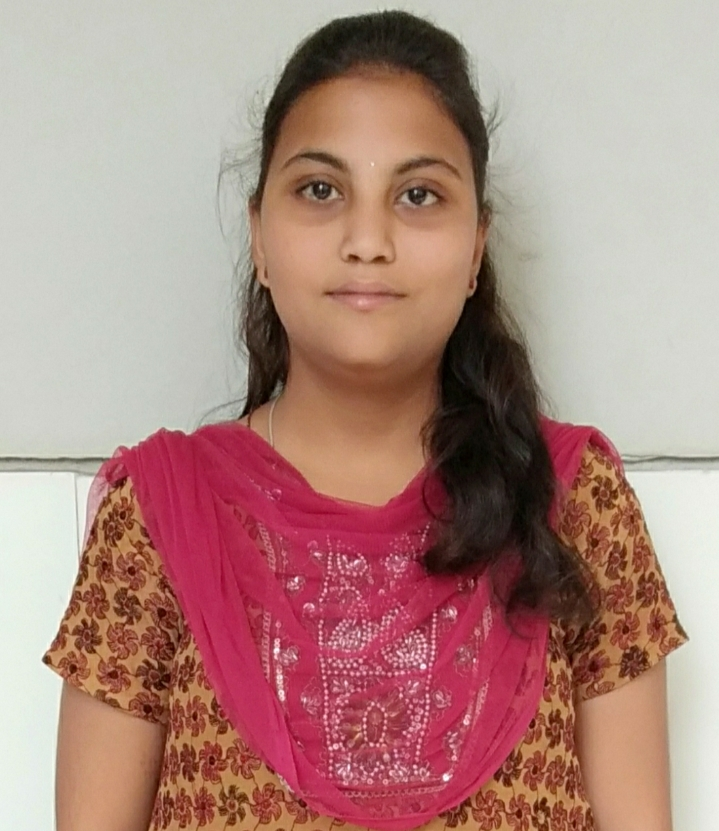

Main menu
January 2022
Resume Project
Abhishek Soudagar
•
Yesterday
sty.css
Style Sheet
index.html
HTML
Class comments
Document

Megha Kotur
Student
Details about me
Name: Megha M Kotur
Age: 23
Gender: Female
Email: meghamkotur46@gmail.com
Phone_no: 9986863406
Education
Cource
Name of the institude
University
Percentage
SSCL
B C N rotary Eng Med High School
KSEEB
88.16
Puc
Alvas pu College
DPUE
85.83
BE
K.L.E. College of Engineering and Technology Chikodi
VTU
59.9
Technical Skills
Java
C
HTML
Project
Role: Team member
Title: seed sowing and fertilizer spraying robot
Description: This project is basically designed to help farmers in the rural areas. The designed robot is single machinewhich controls
both seed sowing and fertilizer spraying operation with help of android app and bluetooth connectivity it also uses solar power